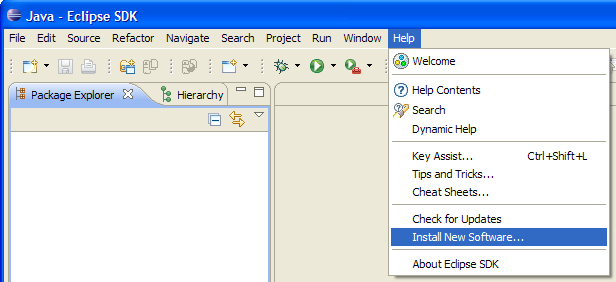
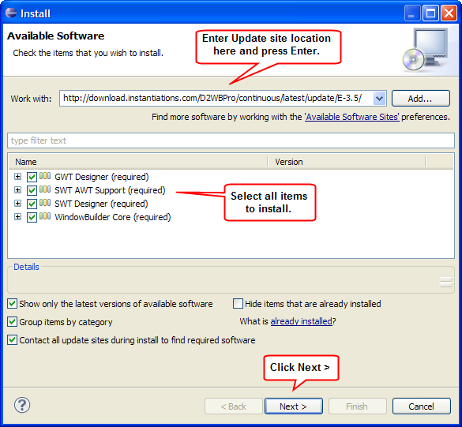

Update Site Installation into Eclipse 3.5
Before you install:
- Make sure your system is supported. See the product's System Requirements.
- Make sure Eclipse is installed. You can download Eclipse from
the Eclipse.org
website.
- Make sure Java is installed. You can download Java from Sun's
website.
- Warning: If you previously installed using
the installer or a zip file, you need to uninstall and start with
a fresh copy of Eclipse.
Choose from the following options:
Follow these steps if the product has not been previously installed in this instance of Eclipse/IDE.
- In Eclipse, click Help > Install New Software...
 Software Updates Menu">
- Get the update site location from the product download page.
On the download page, right-click on the Update Site URL button and
copy the link location to your clipboard.
- In the Available Software dialog, enter the product's update site location and select all the items to install. Click Next to continue.

- Click Next to confirm installation.
- Read and accept the license agreement. To continue installing,
select "I accept the terms of the license agreement" and click Finish.
- When prompted to restart Eclipse, click Yes to restart.
Follow these steps if the product has been previously installed in this instance of Eclipse using the update site and you just want to update to get the latest build.
- In Eclipse, click Help > Check for Updates...

- If updates are available, a dialog comes up asking for confirmation. Click Next then Finish to continue.
- When prompted to restart Eclipse, click Yes to restart.